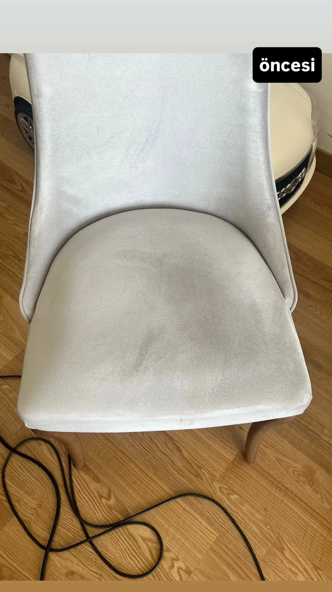

Ticari ve Bireysel Sandalye Temizliği
Evlerimizdeki yemek masası sandalyeleri ve berjerlerin yanında, özellikle kafe, restoran, toplantı salonu ve ofis içi operasyonel koltuklar gün içerisinde yüzlerce insanın temasına maruz kalır. Bu yoğun kullanım sonucunda kumaş aralarına çok miktarda yiyecek/içecek döküntüsü sızar ve hızlı kirlenme, lekelenmeler oluşur.
SVD Temizlik olarak, ister evde 6 adet yemek sandalyesi olsun, ister bir restorandaki 200 adet sandalye olsun; kumaş veya nubuk fark etmeksizin güçlü Kârcher makinelerimizle profesyonel hizmet veriyoruz.
Avantajlarımız
- Hızlı Kuruma: Yüksek güçlü vorteks vakum makinelerimiz suyun tamamına yakınını çeker, işletmeler için ertesi güne sandalyeler kuru ve kullanıma hazır hale gelir.
- Esnek Mesai: Kafe ve restoran gibi işletmeler için, müşteri akışını bölmemek adına gece kapanış sonrasında veya dilediğiniz özel bir saatte hizmet verebiliyoruz.
- Uzun Ömürlü Eşyalar: Doğru temizlik sıvıları eşyanın kumaş formunu korur ve çürümeyi engeller. Çöpe atılıp yenisini almak yerine yenilemek yüksek tasarruf sağlar.
- Kötü Koku Eliminasyonu: İşletmelerde nargile, sigara veya yemek kokularının sandalyelere sinmesini engellemek için parfümlü değil, koku parçalayıcı solüsyonlar kullanıyoruz.
Sıkça Sorulan Sorular
Evet, kafe, restoran, otel ve ofisler için toplu sandalye ve koltuk yıkama servisimiz bulunmaktadır. İşletmenin çalışma saatleri dışında gelip işlemleri tamamlıyoruz.
Tekli berjerler ortalama 15-20 dakika, yemek masası sandalyeleri ise kirlilik durumuna göre adet başına ortalama 5-10 dakika sürmektedir.